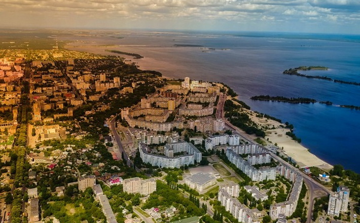

Розповідь про Черкаську область
Черкащина – серце України! Це регіон, несправедливо обділений туристичною увагою, що містить в собі десятки й сотні історій, що стались на його теренах упродовж віків.
Саме тут, в Черкаській області, знаходиться географічний центр України, що розташований біля села Мар’янівка Звенигородського району.
Тут збудували історико-географічний центр з однойменною назвою.
Обласний центр – місто Черкаси – одне з найдавніших і найславетніших місць нашої країни. Тут знаходиться єдиний у світі музей «Кобзаря» Тараса Шевченка,
також меморіальний музей В. Симоненка, музей українського рушника, художній та краєзнавчий музеї.Черкаська філармонія та драмтеатр імені
Шевченка є основою музично-театральних подій міста. Вражаючою цікавинкою Черкас є Храм Білого Лотоса – найбільший буддійський храм в усій Європі!
У місті багато зелених зон – парків та скверів – та найбільшим є міський парк «Сосновий бір», який є популярним серед місцевих та гостей міста.
